Fenrir
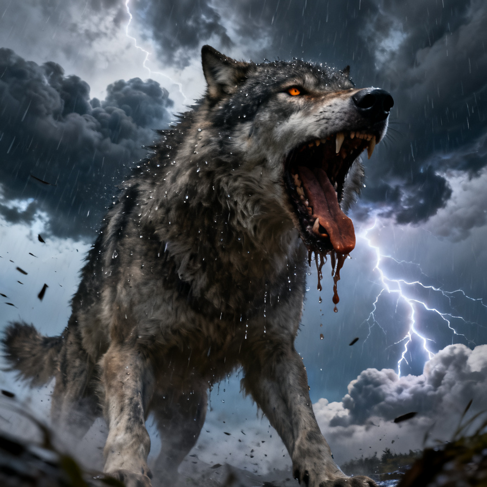
The monstrous wolf destined to break free at Ragnarök, feared even by the gods.

The monstrous wolf destined to break free at Ragnarök, feared even by the gods.
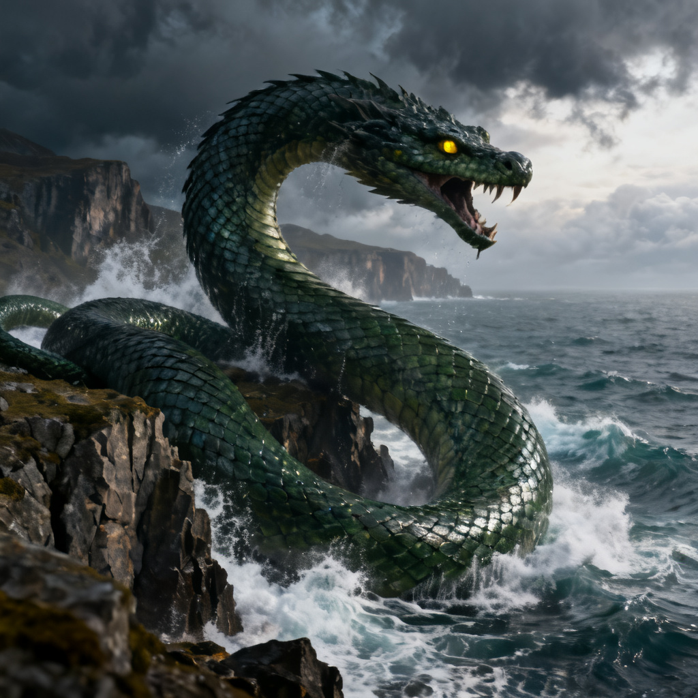
The mighty world serpent that coils around Midgard, ruling the depths of the sea.
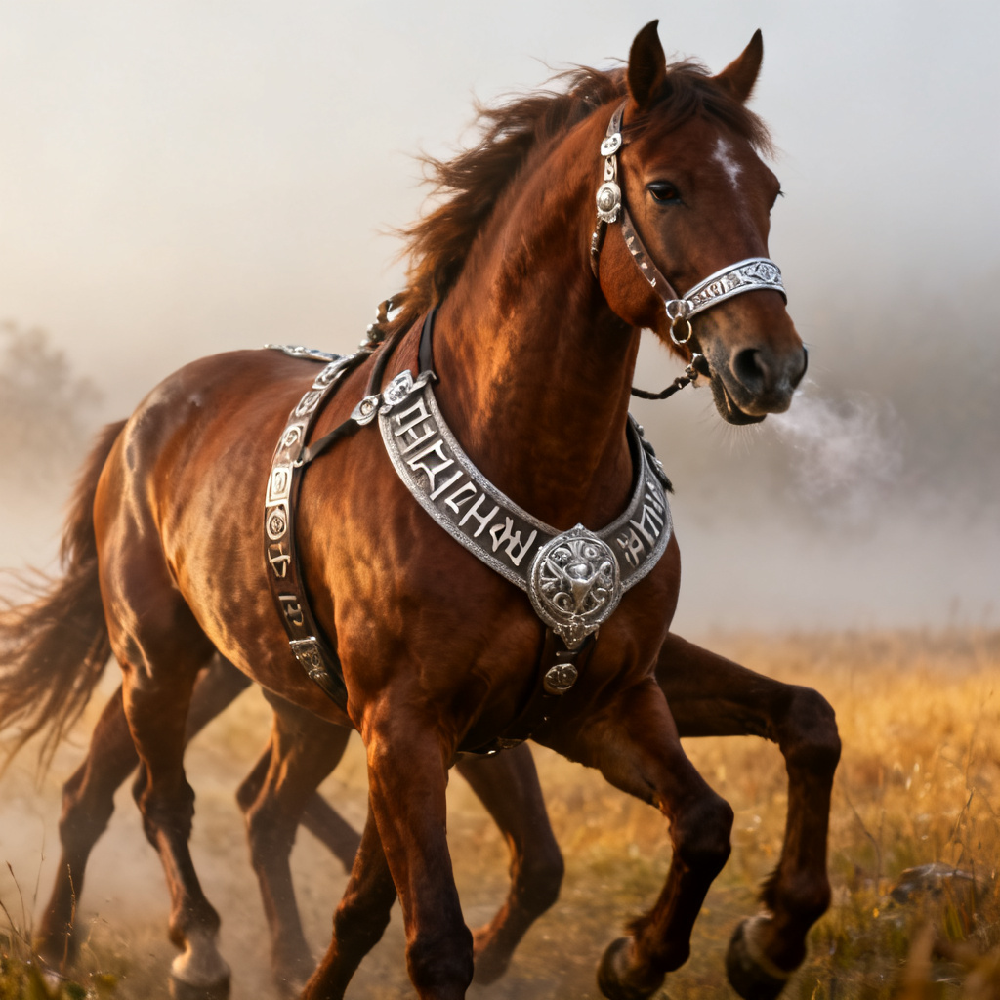
Odin's legendary eight-legged horse, faster than the wind and able to travel between worlds.

Freyja's mystical giant cats, powerful guardians who pull her chariot through the skies.
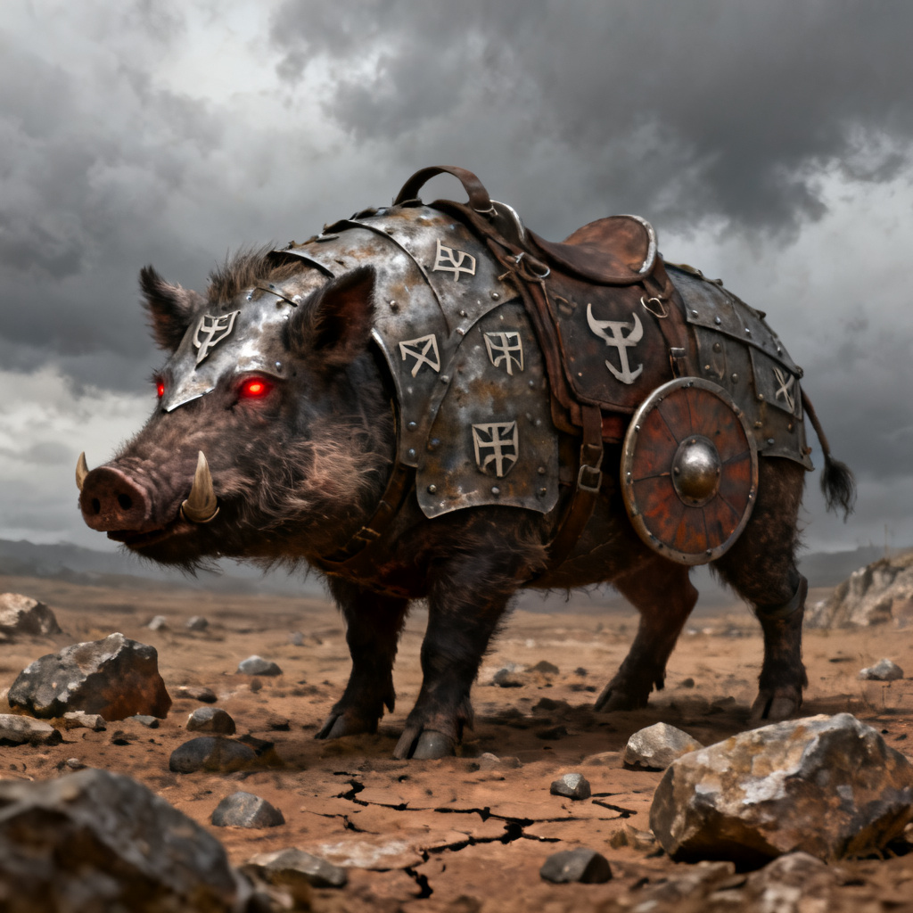
Freyja's fierce golden boar, shining with divine power and unmatched strength.
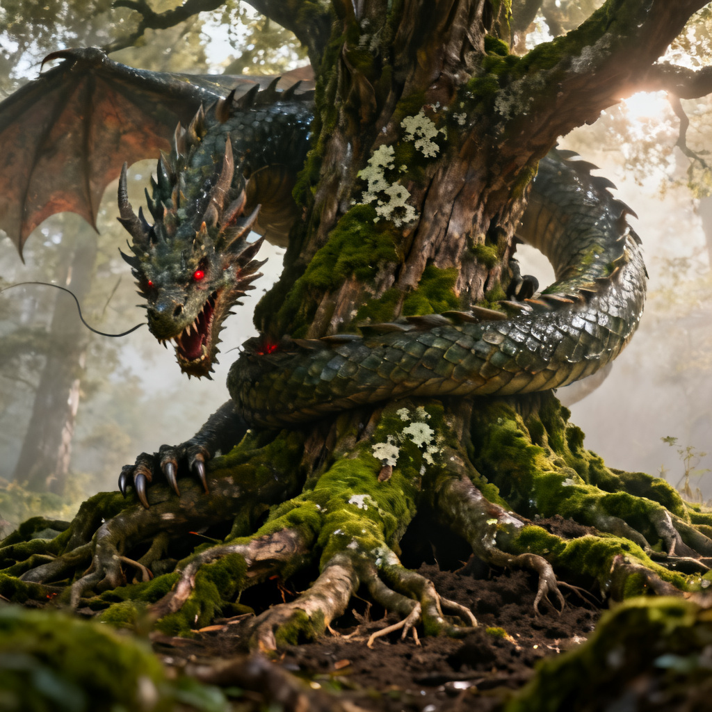
The dragon beneath Yggdrasil, endlessly gnawing at the roots of the world tree.
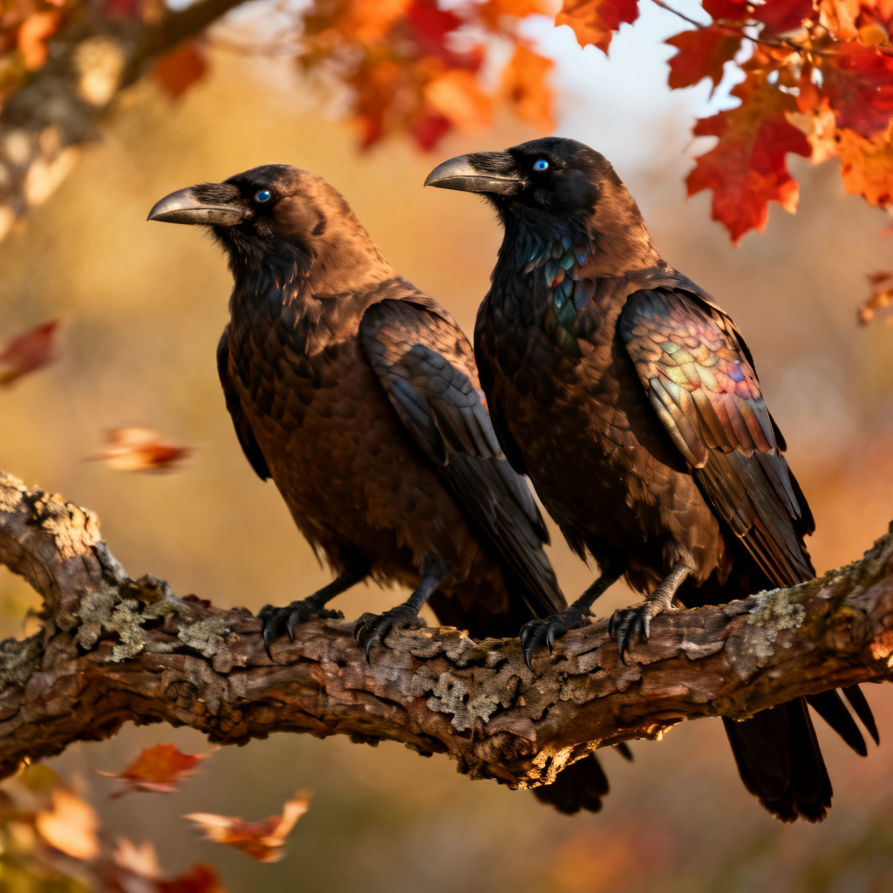
Odin's two ravens who fly across the realms, bringing him wisdom and secrets each day.

Thor's magical goats, able to be eaten and reborn, forever pulling his thunder chariot.
| Photo | Name | Realm | Weight | Learn More |
|---|---|---|---|---|
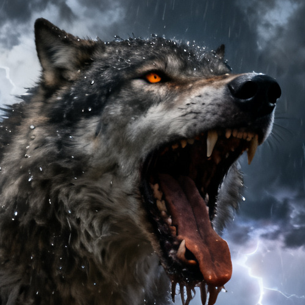 |
Fenrir | Asgard's Forbidden Wilds | Impossible to weigh | Read More |
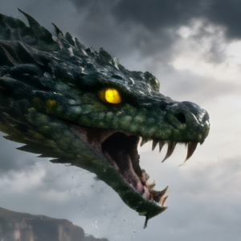 |
Jörmungandr | Midgard's Endless Sea | World Sized | Read More |
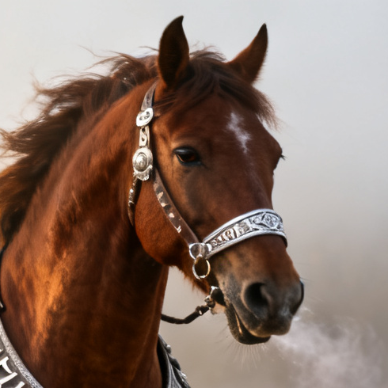 |
Sleipnir | The Nine Realms | 900 kg | Read More |
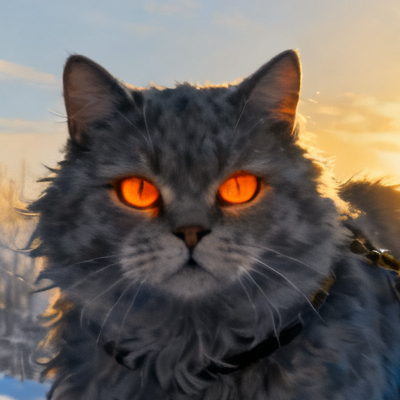 |
Bygul | Freyja's Golden Fields | 240 kg | Read More |
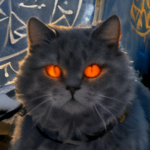 |
Trjegul | Freyja's Golden Fields | 255 kg | Read More |
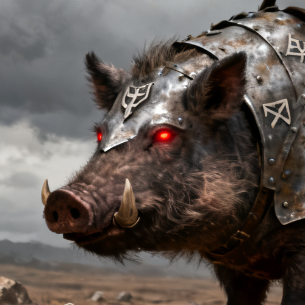 |
Hildisvíni | Freyja's Sacred Forest | 430 kg | Read More |
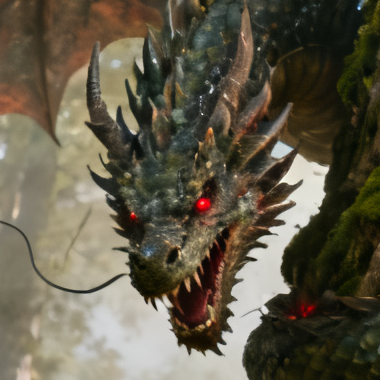 |
Nidhogg | Beneath Yggdrasil | 2,000 kg | Read More |
|
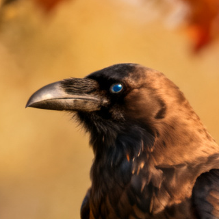 |
Huginn | Odin's Watch Skies | 4.7 kg | Read More |
|
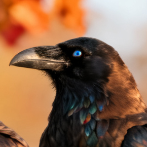 |
Muninn | Odin's Watch Skies | 4.9 kg | Read More |
|
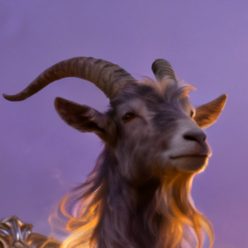 |
Tanngrisnir | Thor's Thunder Plains | 175 kg | Read More |
|
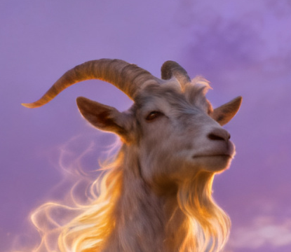 |
Tanngnjóstr | Thor's Thunder Plains | 185 kg | Read More |
Located in mythical quiet forests, Ravenfjord Reserve is said to exist where ancient legends still echo through the trees. You can find us north of Uppsala… or at least that's what the maps say. The ravens know the truth.